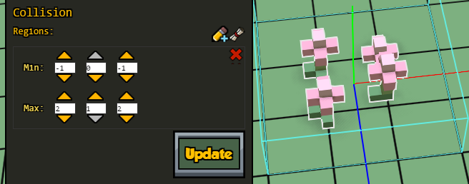
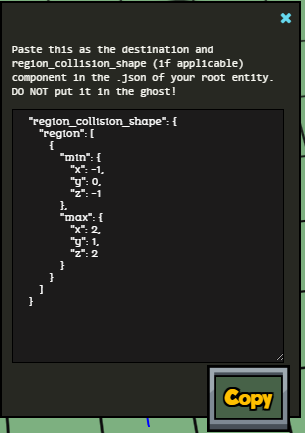
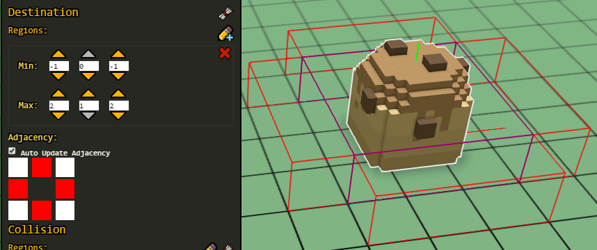

Collision types
Usually we define one or more collision regions for our entities (if they need collision), but for sentient entities we normally use a predefined collision type. If hearthlings should be able to walk through that entity, we might not need to add a region_collision_shape component.
To use the default collision types, we have to define them inside the mob component. For example:
"mob": {
"mob_collision_type": "clutter"
}
The possible types are:
"none" -- used for firepit seats (they're invisible, and hearthlings should be able to sit through them) and for the titan.
"clutter" -- this type will make hearthlings be able to walk through the item. Used in small plants, windows, etc.
Items with this collision type will be destroyed when their supporting block is removed. This is to prevent spam of random clutter when mining the ground (if the items don't have a collision type defined but have collision regions, then hearthlings won't be able to mine the blocks below their collision region).
"tiny" -- this type is used for critters and some small objects, normally. In practice, it's the same type than "clutter" (imagine a 1x1x1 region).
"humanoid" -- this is the one used by hearthlings and monsters. Imagine a 1x3x1 region.
"titan" -- this is an unused type. Imagine a 7x6x7 region plus a 5x8x5 region. Items and sentient beings might end up floating too high when interacting with regions that big, and viceversa, so it's not recommended.
We can't see these region types using debugtools, but notice how hearthlings can't dig tunnels shorter than 3 blocks, nor reach items that are in a hole that small, because they collide with the ceiling.
It's also possible to derive the region from the QB model, but it's better for performance if it's a simpler shape. And it will be translated in world units from the original model, regardless of the scale of the model in game, so it's recommended to define your own collision regions or to use one of the types above.
For example, this is from large_boulder_1.json:
"region_collision_shape": {
"region_from_model": {
"model": "file(large_boulder_1.qb)"
}
}
Like trees, boulders are at the same scale than terrain (1 voxel in the model is 1 world unit), so the collision region will match. But if we had changed their scale in the JSON file to something bigger or smaller, the collision region would still be this big (since we can't define regions with decimal values).
Like explained above, it's better to use simple rectangular shapes when possible. The "clutter" type is also good when there can be many of these entities placed at the same location.
Collision regions
The collision region tells the game that a hearthling cannot walk through an object, and that we can't place any other items in that area. Without a collision region, hearthlings will be able to walk straight through the objects!
The region_collision_shape component defines collision regions in terms of its own coordinate system. +Y is the same as the world coordinate system, but +X and +Z are the opposite. It is defined this way so that most values are positive (objects larger than 2 blocks in the X or Z direction may not have all values positive).

If you press F11 and select an entity, you should be able to see its collision region as a transparent box with light blue edges. It usually overlaps with the destination region, so sometimes it's hard to see one or the other.
The following is an example taken from stone_chair.json:
"region_collision_shape" : {
"region": [
{
"min" : { "x" : 0, "y" : 0, "z" : 0 },
"max" : { "x" : 1, "y" : 2, "z" : 1 }
}
]
}
In this example we can see that the object is 1 block wide in the X and Z directions and 2 blocks high in the Y direction, starting from the region_origin which we previously defined. Z direction is to the north and X direction is to the west as previously defined.
You can add more than one collision shape inside the "region" array. Make sure that the "min" values are lower than the "max" values for each region.
You can't have regions that cover fractions of a world unit. The values have to be defined in whole blocks. If you use fractional values, or if the region is not aligned with the edges of the blocks, discrete values will still be used by the game internally, so you might notice that hearthlings are not interacting at the exact places that you defined.
By default, hearthlings can walk over any object that has a height of 1 unit, so if your collision cube is too low, hearthlings will be able to walk on top of it.
In order to adjust our collision regions manually, we can simply add
"region_collision_shape": {}
in our JSON file (the one for the root entity, NOT in the ghost!) and then open the game and use the Entity editor with our item. The pencil with a + sign allows to add a new collision region, the X is to remove them and we can adjust them by using the up and down arrows for each dimension:

Once you're happy with your collision regions, click on the scroll icon next to the Collision section, click on the Copy button, and paste the data in your JSON file (again remember, collision and destination regions do NOT go in the ghost JSON file).

Region collision types
Besides the collision types, there's also region collision types, but in most cases modders don't need to be concerned about them.
"none" -- this is used for items like wall hangings (tapestries, paintings...), rugs and the like, and doors. They need a collision region, so that in the builder we have a box on them that we can drag to move the item around (and the builder knows in which order they should be built), but at the same time we don't want hearthlings to collide with them (since regions are full blocks size, and these are thin items).
In the case of doors, it helps preventing enemies from entering houses while still allowing hearthlings to use them (although that also involves the player_id).
"solid" -- most of the items have this type. When we don't define a "region_collision_type", it will be solid by default.
"platform" -- this is used for wet stones, dry stones, and more importantly, scaffolding. With this type, hearthlings can stand on top of the scaffolding and are also able to walk through its sides.
Example from throw_rug.json:
"region_collision_shape": {
"region_collision_type": "none",
"region": [
{
"min": { "x": -2, "y": 0, "z": -2 },
"max": { "x": 1, "y": 0.1, "z": 1 }
}
]
}
Destination regions
If hearthlings interact with our object by walking up next to it, we need to define a destination component to declare what it means to be next to our object.
The destination component determines the area around a thing that is an acceptable distance to be standing when interacting with the thing. When declaring it in the JSON file, pass in a region around the object as a rectangle with start and end diagonal coordinates. The end coordinates are exclusive.
By default, the game generates 4 adjacency regions as edges to the specified destination region even if we don't specify any adjacency flag. This usually means we want the destination region to be a box around the entire object (many times it's the same area than the collision region). We rarely want to stand in the diagonal corners of the objects since that's usually not close enough to the model or doesn't look good. When there is no destination, the game just assumes it is the same as the collision.
Like with the collision regions, we can add, remove and adjust the destination regions visually in the game if we first add
"destination": {}
in the components of the JSON file of the root entity (NOT the ghost!).
Now place your item in the world, select it and open the Entity editor. Add a destination region and make sure to check the "Auto update Adjacency" checkbox too. Now you can click on any of the squares of the adjacency flags.
You should see a transparent box with purple edges (the destination region), and transparent boxes with red edges adjacent to that region. These red boxes define which grid blocks a hearthling can stand on to be considered "next to" the object. The goal is to get the red boxes to contain the grid around the edges of the object (they have to be aligned or else bad things might happen!).

Hearthlings will walk up to any of the blocks in the adjacency region to start interacting with the object. If our destination region is high, the adjacency region will also be high (but normally it will only be one block thick since hearthlings only need 1 block to stand on the ground).
By adjusting the destination region and the adjacency flags, we can make the hearthlings interact only from one side of the object. For example, the Potter uses the kiln only from the front side, and beds are only reachable if the blocks next to the longer sides are not occupied by collision boxes of other items.
The possible adjacency flags are:
"adjacency_flags": [
"front",
"left",
"back",
"right",
"front_left",
"front_right",
"back_left",
"back_right"
]
Example of destination component from clay_bed.json:
"destination": {
"region": [
{
"min": {
"x": -1,
"y": 0,
"z": -1
},
"max": {
"x": 2,
"y": 1,
"z": 2
}
}
],
"adjacency_flags": [
"left",
"right"
]
}
As with the origins and collision region, click the "Show Json" button next to the Destination in the Entity Editor to get the destination and collision info. Paste that text into the components section of the actual JSON file (remember, NOT in the ghost JSON file! That would cause errors).
Always make sure that your regions work when the object is rotated! Also test to make sure that the hearthlings can walk up to your object and their animations look correct next to it.